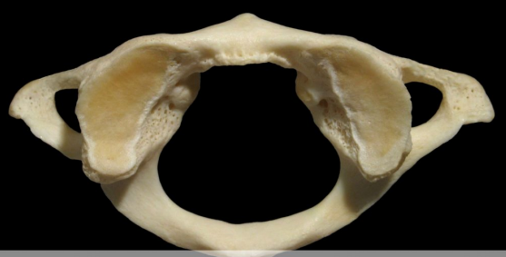
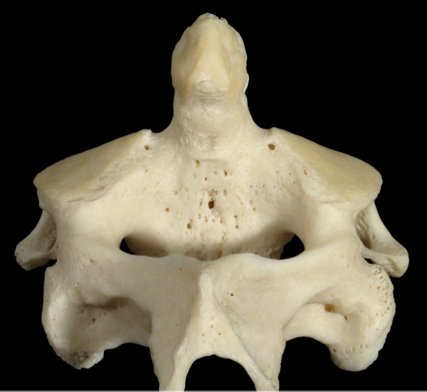
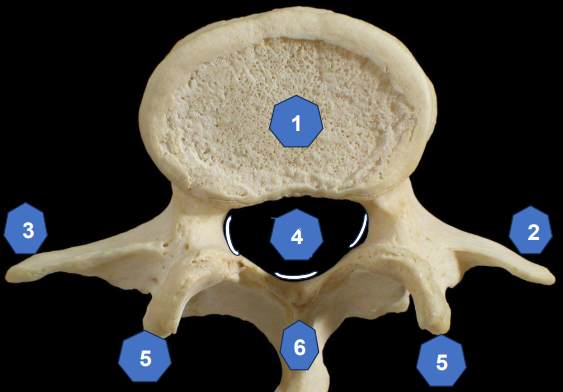

מבוסס על חומרי לימוד ממכון וינגייט
למבוגר יש 206 עצמות, לתינוק יש כ-270 עצמות שחלקן מתמזגות עם הגיל.
העצמות מספקות מבנה קשיח לגוף ונושאות את משקל הגוף
העצמות מגינות על איברים חיוניים (גולגולת על המוח, צלעות על הלב והריאות)
העצמות משמשות כמנופים שאליהם נצמדים השרירים
העצם משמשת מאגר לסידן (Ca) ופוספט
מח העצם מייצר תאי דם אדומים ולבנים
כולל 80 עצמות המהוות את ציר הגוף:
כולל 126 עצמות של הגפיים וחגורות הכתפיים והאגן:
| סוג העצם | תיאור | דוגמאות |
|---|---|---|
| עצמות ארוכות (Long Bones) | עצמות עם גוף ארוך ושני קצוות | Femur (עצם הירך), Humerus (עצם הזרוע), Radius, Tibia |
| עצמות קצרות (Short Bones) | עצמות קוביות בגודל דומה בכל הממדים | עצמות שורש כף היד (Carpals), עצמות שורש כף הרגל (Tarsals) |
| עצמות שטוחות (Flat Bones) | עצמות דקות ושטוחות | צלעות (Ribs), עצם החזה (Sternum), שכמה (Scapula), גולגולת |
| עצמות לא סדירות (Irregular Bones) | עצמות ללא צורה מוגדרת | חוליות (Vertebrae), עצמות הפנים |
| עצמות ססמואידיות (Sesamoid Bones) | עצמות קטנות הטמונות בגידים | פיקה (Patella) |
תא בונה עצם - מייצר רקמת עצם חדשה על ידי הפרשת קולגן ומינרלים
תא מפרק/הורס עצם - שובר ומפרק רקמת עצם ישנה
תא עצם בוגר - שומר ומתחזק את רקמת העצם הקיימת
העצם נמצאת בתהליך מתמיד של בניה והרס (Remodeling). האוסטאובלסטים בונים עצם חדשה והאוסטאוקלסטים מפרקים עצם ישנה. איזון תקין בין התהליכים חיוני לבריאות העצם.
עקרון יסוד: עצם נבנית, מצטפפת ומתחזקת בהתאם לעומסים המכניים הפועלים עליה.
המשמעות: פעילות גופנית והעמסה על העצמות מחזקת אותן, בעוד חוסר פעילות מחליש אותן.
דוגמה: ספורטאים בענפי כוח או ריצה יפתחו עצמות צפופות וחזקות יותר באזורים הנתונים להעמסה.
הגדרה: ירידה מתונה בצפיפות העצם
T-Score: בין -1 ל--2.5
משמעות: שלב ביניים לפני אוסטאופורוזיס, ניתן לטיפול ולשיפור
הגדרה: מחלת עצם המאופיינת בירידה משמעותית בצפיפות וחוזק העצם
T-Score: -2.5 ומטה
תוצאות: העצמות הופכות שבריריות ונוטות יותר לשברים
אזורים נפוצים לשברים: צוואר הירך, חוליות, שורש כף היד
גורמי סיכון: גיל מתקדם, נשים אחרי גיל המעבר, חוסר פעילות גופנית, תזונה דלת סידן
אזור סחוסי בין האפיפיזה לדיאפיזה שבו מתרחשת צמיחה לאורך של העצם.
גיל סגירה: 16-21 (משתנה בין אנשים ובין עצמות שונות)
לאחר הסגירה, לוחית הצמיחה הופכת ל-Epiphyseal Line ואין עוד צמיחה לאורך.
אימוני כוח מתוכננים כראוי בילדות ובגיל ההתבגרות לא מזיקים ללוחית הצמיחה, ואף מחזקים את העצמות. חשוב להקפיד על טכניקה נכונה ועומסים הולמים.
סחוס הוא רקמת חיבור מיוחדת, גמישה וחלקה, עשירה במים. הסחוס אינו מכיל כלי דם (אווסקולרי) והוא ניזון בדיפוזיה, לכן יכולת ההתאוששות שלו מוגבלת.
תיאור: הסוג הנפוץ ביותר, דק, שקוף, חלק וגמיש
הרכב: עשיר במים (כ-60-80%)
תפקיד עיקרי: מניעת חיכוך במפרקים.
מיקומים:
תיאור: סחוס חזק ועמיד המכיל כמות גדולה של סיבי קולגן
תפקיד עיקרי: פיזור עומסים, בלימת זעזועים, תמיכה
מיקומים:
תיאור: סחוס גמיש מאוד המכיל כמות גדולה של סיבי אלסטין
תפקיד עיקרי: מתן תמיכה גמישה לאיברים
מיקומים:
| מאפיין | סחוס היאליני | סחוס סיבי | סחוס אלסטי |
|---|---|---|---|
| גמישות | בינונית | נמוכה (קשיח) | גבוהה מאוד |
| חוזק | בינוני | גבוה מאוד | נמוך |
| סיבים עיקריים | קולגן דק | קולגן עבה | אלסטין |
| מים | 60-80% | 60-70% | 70-80% |
אין אספקת דם ישירה - הסחוס מתזן בדיפוזיה, לכן יכולת ההתחדשות שלו מוגבלת מאוד
אין עצבוב ישיר - בשלבים הראשונים של נזק לסחוס אין כאב, מה שעלול להוביל להחמרה ללא שמטופל יודע
שחיקת סחוס - תהליך בלתי הפיך ברוב המקרים. במקרים קשים עלול להוביל לאוסטיאוארתריטיס
| דרגה | תיאור הנזק | תסמינים |
|---|---|---|
| 1 | לחץ נקודתי ממושך - נוצרת "שלפוחית" על גבי הסחוס | לרוב אין תסמינים |
| 2 | נוצרים סדקים בתוך הסחוס | לרוב אין תסמינים, לעיתים אי נוחות קלה |
| 3 | מחסור בסחוס באזור נקודתי - העצם חשופה | כאב בעת העמסה על האזור |
| 4 | שחיקה ניוונית נרחבת (Osteoarthritis) | כאב משמעותי, נפיחות, הגבלה בתנועה |
מפרק הוא מקום החיבור בין שתי עצמות או יותר. המפרקים מאפשרים תנועה ויציבות לגוף.
מבנה: העצמות מחוברות ברקמת חיבור צפופה (קולגן) ללא חלל מפרקי
תנועתיות: אין תנועה או תנועה זניחה
דוגמאות:
מבנה: העצמות מחוברות בסחוס
תנועתיות: תנועה מוגבלת, בעיקר בלימת זעזועים
דוגמאות:
מבנה: מפרקים מורכבים עם חלל מפרקי וקפסולה
תנועתיות: טווח תנועה רחב, המפרקים הנפוצים ביותר בגוף
זהו הסוג החשוב ביותר למאמן כושר! (המפרקים שאנחנו מאמנים)
| סוג מפרק | מבנה | תנועות | דוגמאות |
|---|---|---|---|
| Ball & Socket (כדור ושקע) |
ראש כדורי נכנס לשקע | רב-צירי - כל התנועות בכל המישורים | כתף (Glenohumeral), ירך (Hip) |
| Hinge (ציר) |
כמו ציר דלת | חד-צירי - Flexion/Extension | מרפק (Elbow), ברך (Knee), אצבעות |
| Pivot (ציר סיבובי) |
עצם אחת מסתובבת סביב אחרת | חד-צירי - Rotation | C1-C2 (Atlas-Axis), רדיוס-אולנה |
| Condyloid (אליפסואידי) |
משטח אליפסי | דו-צירי - Flexion/Extension, Abduction/Adduction | שורש כף יד (Wrist) |
| Saddle (אוכף) |
שתי עצמות בצורת אוכף | דו-צירי - תנועות מגוונות | בסיס האגודל |
| Gliding (החלקה) |
משטחים שטוחים | החלקה מוגבלת | פנים השכמה, שורש כף יד/רגל |
מחברת: עצם לעצם
תפקיד: ייצוב המפרק, מניעת תנועה מוגזמת
הרכב: רקמת חיבור עשירה בקולגן Type I
גמישות: מעט גמישה (כ-5-10% מתיחה)
דוגמאות: ACL, PCL בברך; LCL, MCL בברך ומרפק
מחבר: שריר לעצם
תפקיד: העברת כוח מהשריר לעצם
הרכב: רקמת חיבור עשירה מאוד בקולגן, המשך ישיר של מעטפת השריר
גמישות: קשיח מאוד (עד 8% מתיחה)
דוגמאות: גיד אכילס, Patellar Tendon, Rotator Cuff
נקע (Sprain) - קרע ברצועה. 3 דרגות חומרה:
מתיחה/קרע (Strain) - קרע בסיבי השריר או הגיד
דלקת גיד (Tendinitis) - דלקת בגיד כתוצאה משימוש יתר
שריר הוא רקמה בעלת יכולת התכווצות, המאפשרת תנועה, שמירת יציבה וייצור חום.
שליטה: רצונית (Voluntary)
מראה: משורטט (Striated) - פסים רוחביים
מיקום: מחובר לשלד בגידים
תפקיד: תנועה, שמירת יציבה, ייצור חום
זהו השריר שאנו מאמנים!
שליטה: לא רצונית (Involuntary)
מראה: לא משורטט (Non-striated)
מיקום: דפנות איברים פנימיים, כלי דם
תפקיד: תנועת מזון במעיים, התכווצות כלי דם
שליטה: לא רצונית (Involuntary)
מראה: משורטט (Striated)
מיקום: שריר הלב בלבד
תפקיד: שאיבת דם
ייחודיות: מתכווץ באופן אוטומטי ומקצבי
מבנה: הסרקומר מורכב מחלבונים:
אנרגיה: כל מחזור דורש ATP (אדנוזין טריפוספט)
הכיווץ הנפוץ ביותר, בו אורך השריר משתנה
השריר מתכווץ ומתקצר
דוגמה: הרמת משקולת כלפי מעלה - הביצפס מתקצר
תפקיד: ייצור כוח, ביצוע תנועה
קל לזכור: "קון" מתחרז עם "ניצחון" - השריר מתגבר על ההתנגדות
השריר מתכווץ ומתארך
דוגמה: הורדת משקולת בשליטה - הביצפס מתארך בעוד הוא מתכווץ
תפקיד: בלימה, שליטה בתנועה, בולם זעזועים
קל לזכור: "Exit" - החוצה, השריר מתארך
חשוב: כיווץ אקסצנטרי יכול לייצר עד 40% יותר כוח!
השריר מתכווץ ללא שינוי באורכו
דוגמה: אחזקת Plank, דחיפת קיר
תפקיד: ייצוב, שמירת יציבה
יתרון: מחזק את השריר בזווית ספציפית
חיסרון: השיפור בכוח ספציפי לזווית בה התאמנו
| תפקיד | הגדרה | דוגמה |
|---|---|---|
| Agonist (אגוניסט) |
השריר העיקרי המבצע את התנועה - המניע הראשי (Prime Mover) | בכפיפת מרפק: Biceps Brachii |
| Antagonist (אנטגוניסט) |
השריר המבצע את הפעולה ההפוכה, נמצא ברפיון יחסי | בכפיפת מרפק: Triceps (מבצע פשיטה) |
| Synergist (סינרגיסט) |
שריר עוזר המסייע לאגוניסט בביצוע התנועה | בכפיפת מרפק: Brachialis, Brachioradialis |
| Fixator/Stabilizer (מקבע/מייצב) |
שריר המייצב חלק מסוים בגוף בכיווץ איזומטרי | בכפיפת מרפק: שרירי השכמה מייצבים את הכתף |
התפקידים משתנים בהתאם לתנועה! שריר שהוא אגוניסט בתנועה אחת יכול להיות אנטגוניסט או סינרגיסט בתנועה אחרת.
| מאפיין | Type I (סיבים אדומים/איטיים) | Type IIa (סיבים אדומים/מהירים) | Type IIx (סיבים לבנים/מהירים) |
|---|---|---|---|
| מהירות התכווצות | איטי | מהיר | מהיר מאוד |
| עמידות לעייפות | גבוהה מאוד | בינונית-גבוהה | נמוכה |
| ייצור כוח | נמוך-בינוני | גבוה | גבוה מאוד |
| מיטוכונדריה | הרבה | בינוני | מעט |
| מקור אנרגיה | אירובי (חמצן) | אירובי + אנאירובי | אנאירובי (ללא חמצן) |
| פעילויות מתאימות | ריצות ארוכות, אופניים, שחייה למרחקים | ריצת 400-800 מטר, שחייה בינונית | ספרינט, הרמת משקולות כבדות |
נקודת האחיזה הקרובה/היציבה יותר
בדרך כלל על העצם הפרוקסימלית/מרכזית יותר
זו הנקודה ש"לא זז" במהלך התנועה
נקודת האחיזה הרחוקה/הנעה
בדרך כלל על העצם הדיסטלית/היקפית יותר
זו הנקודה שזזה לכיוון ה-Origin כשהשריר מתכווץ
כל תנועה בגוף מתרחשת באחד או יותר מהמישורים הבאים. הבנת המישורים חיונית לתכנון אימונים יעילים!
חוצה את הגוף: לימין ושמאל
ציר התנועה: מדיאלי-לטרלי (Mediolateral)
תנועות עיקריות:
דוגמאות לתרגילים: Squat, Deadlift, Lunge קדמי, Bicep Curl, Push-Up
חוצה את הגוף: לקדמי ואחורי
ציר התנועה: אנטרו-פוסטריור (Anteroposterior)
תנועות עיקריות:
דוגמאות לתרגילים: Lateral Raise, Side Lunge, Jumping Jacks, Side Plank
חוצה את הגוף: לעליון ותחתון
ציר התנועה: אנכי (Vertical / Longitudinal)
תנועות עיקריות:
דוגמאות לתרגילים: Russian Twist, Cable Wood Chop, Medicine Ball Throw
תכנית אימונים מאוזנת חייבת לכלול תרגילים בכל שלושת המישורים!
| מונח | משמעות | הפוך |
|---|---|---|
| Anterior/Ventral | קדמי - לכיוון החזה | Posterior/Dorsal - אחורי |
| Superior/Cephalic | עליון - לכיוון הראש | Inferior/Caudal - תחתון |
| Medial | פנימי - קרוב לקו האמצע | Lateral - חיצוני, רחוק מקו האמצע |
| Proximal | קרוב לנקודת חיבור הגף לגוף | Distal - רחוק מנקודת החיבור |
| Superficial | שטחי - קרוב לפני השטח | Deep - עמוק |
עמוד השדרה מורכב מ-33 חוליות המחולקות ל-5 אזורים
| אזור | סימון | מספר חוליות | מאפיינים |
|---|---|---|---|
| צווארי (Cervical) | C1-C7 | 7 חוליות |
• נקב בזיזים הרוחביים (עובר בו עורק חולייתי) • גוף חולייה קטן וצר • זיז אחורי ממוזלג (C2-C6) • נקב חולייתי משולש וגדול • משטחים מפרקיים במישור הוריזונטלי |
| חזה (Thoracic) | T1-T12 | 12 חוליות |
• משטח מפרקי לחיבור צלעות (סימן מובהק!) • גוף חולייה בינוני • זיז אחורי נוטה כלפי מטה (T5-T8) • משטחים מפרקיים במישור קורונלי |
| מותני (Lumbar) | L1-L5 | 5 חוליות |
• גוף חולייה גדול ועבה (נושאות משקל רב!) • זיז אחורי ריבועי ומעובה • נקב חולייתי קטן יחסית • משטחים מפרקיים במישור סגיטלי |
| סקרום (Sacrum) | S1-S5 | 5 חוליות מאוחות |
• עצם משולשת אחת • מחוברת לאגן (Sacroiliac Joint) • נושאת את משקל הגוף העליון |
| קוקסיקס (Coccyx) | Co1-Co4 | 4 חוליות מאוחות |
• עצם הזנב • שריד אבולוציוני • נקודת אחיזה לשרירי רצפת האגן |
מיקום: צוואר ומותניים
כיוון: עקמומיות קדימה (קמור לאחור, קעור קדימה)
תפקיד: בולם זעזועים, שומר על מרכז כובד
מיקום: בית חזה וסקרום
כיוון: עקמומיות אחורה (קמור קדימה, קעור אחורה)
תפקיד: הגנה על איברים, בולם זעזועים

ייחוד: היחידה שבאה במגע ישיר עם הגולגולת
מבנה: חסרת גוף חולייה, בנויה משתי קשתות
תנועה: מאפשרת הנהון (כן-כן) - Flexion/Extension של הראש

ייחוד: בעלת Dens (זיז השן) - בליטה עצמית כלפי מעלה
מבנה: ה-Dens נכנס למגרעת בחולית C1
תנועה: מאפשרת סיבוב הראש (לא-לא) - Rotation
מפרק: Atlanto-Axial Joint - מפרק Pivot

מיקום: בין גופי החוליות (לא בין C1-C2!)
סוג: סחוס סיבי (Fibrocartilage)
מבנה:
תפקידים:
בליטת דיסק (Disc Bulge): הגרעין הג'לטיני לוחץ על הטבעות הסיביות, הדיסק בולט מהמתאר התקין
פריצת דיסק (Disc Herniation): הגרעין הג'לטיני קורע ופורץ את הטבעות הסיביות
תסמינים: כאב, הקרנה לגפיים, חולשה, עקצוצים (בהתאם לעצב שנלחץ)
אזורים נפוצים: L4-L5, L5-S1 (מותניים תחתונות), C5-C6, C6-C7 (צוואר תחתון)
סוג: עצם ארוכה בצורת S
מיקום: מחברת את השכמה לעצם החזה
תפקידים:
סוג: עצם שטוחה משולשת
מיקום: על צלעות 2-7
נקודות חשובות:
| מפרק | עצמות | סוג |
|---|---|---|
| Sternoclavicular | Sternum + Clavicle | Saddle - החיבור היחיד של הגף העליון לשלד הציר! |
| Acromioclavicular (AC) | Acromion + Clavicle | Gliding |
| Scapulothoracic | Scapula + בית החזה | מפרק פונקציונלי (לא מפרק אמיתי) |
| Glenohumeral | Glenoid Fossa + Head of Humerus | Ball & Socket - מפרק הכתף עצמו |
Elevation: הרמת שכמות כלפי מעלה
Depression: הורדת שכמות כלפי מטה
Protraction (Abduction): הרחקת שכמות קדימה
Retraction (Adduction): קירוב שכמות אחורה
Upward Rotation: סיבוב השכמה כך שה-Glenoid Fossa פונה כלפי מעלה
Downward Rotation: חזרה למנח האנטומי
יחס 2:1 - עבור כל 3 מעלות של הרחקת זרוע:
דוגמה: הרחקה של 180° (זרוע למעלה)
חשיבות: הפרעה למקצב זה עלולה לגרום לפתולוגיות כתף!
Origin: בסיס הגולגולת עד חולייה T12
Insertion: Spine of Scapula, Acromion, 1/3 לטרלי של Clavicle
פעולה מרכזית של כל השריר: Retraction (קירוב שכמות)
Origin: C7-T5
Insertion: Medial Border of Scapula
Action: Retraction, Downward Rotation
Origin: 8 צלעות עליונות (צד לטרלי)
Insertion: Medial Border of Scapula
Action: Protraction, Upward Rotation, מצמיד את השכמה לבית החזה
חשיבות: מונע "שכמה צפה" (Scapula Winging)
עצבוב: Long Thoracic Nerve - נזק עלול לגרום לשכמה צפה
שרירים אלו מייצבים את ראש ההומרוס בשקע ומונעים פריקה
| שריר | Origin | Insertion | Action |
|---|---|---|---|
| Supraspinatus (סופרספינטוס) |
Supraspinous Fossa | Greater Tubercle | Abduction, ייצוב |
| Infraspinatus (אינפרספינטוס) |
Infraspinous Fossa | Greater Tubercle | Lateral Rotation, ייצוב |
| Teres Minor (טרס מינור) |
Lateral Border of Scapula | Greater Tubercle | Lateral Rotation, ייצוב |
| Subscapularis (תת שכמתי) |
Subscapular Fossa | Lesser Tubercle | Medial Rotation, ייצוב |
Origin: Spine & Acromion of Scapula, 1/3 לטרלי של Clavicle
Insertion: Deltoid Tuberosity (באמצע ההומרוס)
שלושה חלקים:
פעולה מרכזית: Abduction של הכתף
Origin: 2/3 מדיאלי של Clavicle, Sternum, 6 צלעות עליונות
Insertion: Bicipital Groove של Humerus
חלקים:
פעולות משותפות: Adduction, Medial Rotation, Horizontal Adduction
Origin: T7-L5, Sacrum, Thoracolumbar Fascia, Iliac Crest, 4 צלעות תחתונות
Insertion: Bicipital Groove
Action: Extension, Adduction, Medial Rotation
ייחודיות: מחבר את הגף העליון לאגן והעמוד התחתון
Origin: Lateral Border of Scapula (חלק תחתון)
Insertion: Bicipital Groove
Action: Extension, Adduction, Medial Rotation
הערה: לא חלק מה-Rotator Cuff!
אפיפיזה פרוקסימלית:
דיאפיזה:
אפיפיזה דיסטלית:
למעשה שני מפרקים:
סוג: Hinge - חד-צירי
תנועות: Flexion/Extension בלבד
רצועות: LCL (לטרלי), MCL (מדיאלי), Annular Ligament (מקיפה את ראש הרדיוס)
אפיפיזה פרוקסימלית:
אפיפיזה דיסטלית:
אפיפיזה פרוקסימלית:
אפיפיזה דיסטלית:
Proximal Radioulnar Joint + Distal Radioulnar Joint
סוג: Pivot
תנועות:
| שריר | Origin | Insertion | Action |
|---|---|---|---|
| Biceps Brachii (דו ראשי זרועי) |
Long Head: Glenoid Fossa Short Head: Coracoid Process |
Radial Tuberosity | Flexion במרפק, Supination, מסייע ב-Flexion בכתף |
| Brachialis (שריר הזרוע) |
חלק אמצעי קדמי של Humerus | Ulnar Tuberosity | Flexion במרפק - המכופף החזק ביותר! |
| Brachioradialis (ברכיורדיאליס) |
חלק דיסטלי לטרלי של Humerus | אפיפיזה דיסטלית של Radius | Flexion במרפק (במנח אמצע), מסייע ב-Supination/Pronation |
שלושה ראשים:
Insertion: Olecranon Process
Action: Extension במרפק, Long Head גם מסייע ב-Extension בכתף
האגן בנוי מ-3 עצמות מאוחות (מכל צד):
העצם הגדולה והעליונה
נקודות חשובות:
העצם האחורית והתחתונה
נקודות חשובות:
העצם הקדמית והתחתונה
נקודות חשובות:
תולדה של שלושת חלקי האגן - השקע בו נכנס ראש עצם הירך
יוצר את מפרק הירך (Hip Joint)
מפרק בין Sacrum לבין Ilium
סוג: Cartilaginous - תנועה מוגבלת מאוד
תפקיד: העברת משקל הגוף העליון לאגן ולגפיים התחתונות
פתולוגיה: SI Joint Dysfunction - כאב אגן תחתון/ישבן
סוג: Ball & Socket - רב-צירי
עצמות: Head of Femur + Acetabulum
מאפיינים:
העצם הארוכה, החזקה והכבדה ביותר בגוף!
אפיפיזה פרוקסימלית:
דיאפיזה:
אפיפיזה דיסטלית:
מורכב משני שרירים:
Insertion: Lesser Trochanter
Action: Flexion בירך, Lateral Rotation, APT, מגדיל לורדוזה מותנית
חשיבות: המכופף העיקרי של הירך!
| שריר | Origin | Insertion | Action |
|---|---|---|---|
| Gluteus Maximus (עכוז גדול) |
Sacrum, Gluteal Fossa | Gluteal Tuberosity, ITB | Extension, Lateral Rotation, PPT |
| Gluteus Medius (עכוז בינוני) |
Gluteal Fossa (חלק לטרלי) | Greater Trochanter | Abduction, ייצוב האגן בהליכה/ריצה |
| Gluteus Minimus (עכוז קטן) |
Gluteal Fossa (חלק לטרלי תחתון) | Greater Trochanter | Abduction, Medial Rotation |
מייצב את האגן כאשר רגל אחת מתרוממת מהקרקע (בהליכה/ריצה)
חולשה עלולה לגרום ל-Trendelenburg Gait - נפילת האגן הצידה
Origin: ASIS
Insertion: ITB (Iliotibial Band)
Action: Flexion, Abduction, Medial Rotation
פאשיה עבה העוברת לאורך הצד הלטרלי של הירך מה-Ilium ועד ה-Tibia
מחוברים אליה: TFL ו-Gluteus Maximus
פתולוגיה נפוצה: ITBS (Iliotibial Band Syndrome) - דלקת, נפוצה אצל רצים
חמישה שרירים: Pectineus, Adductor Longus, Adductor Brevis, Adductor Magnus, Gracilis
Origin: Pubis
Insertion: לאורך הצד המדיאלי של Femur (Gracilis - על Tibia מדיאלי)
Action: Adduction של הירך
Gracilis: היחיד שחוצה את מפרק הברך, גם מכופף ברך
המפרק המורכב ביותר בגוף!
למעשה שני מפרקים:
מונעות עודף תנועה סגיטלית והוריזונטלית
מונעות תנועה מדיאלית-לטרלית
סוג: סחוס סיבי
תפקידים: בולם זעזועים, פיזור עומסים, מניעת חיכוך, תאום בין הפמור לטיביה
העצם הנושאת משקל!
אפיפיזה פרוקסימלית:
דיאפיזה: חדה וטריזית
אפיפיזה דיסטלית:
לא נושאת משקל!
אפיפיזה פרוקסימלית:
אפיפיזה דיסטלית:
ארבעה ראשים - המושטים העיקריים של הברך!
| שריר | Origin | Insertion | Action |
|---|---|---|---|
| Rectus Femoris | AIIS (מתחת ל-ASIS) | Tibial Tuberosity (דרך Patellar Tendon) | Extension ברך, מסייע ב-Flexion בירך |
| Vastus Lateralis | חלק אחורי לטרלי של Femur | Tibial Tuberosity | Extension ברך |
| Vastus Medialis | חלק אחורי מדיאלי של Femur | Tibial Tuberosity | Extension ברך |
| Vastus Intermedius | 2/3 קדמיים של Femur | Tibial Tuberosity | Extension ברך |
"הגוף נועד לתנועה! כל גוף חי, רקמה, איבר או מערכת שאינם נמצאים בפעילות, חלים בהם תהליכים ניווניים."
| מיתוס | האמת |
|---|---|
| לא בטוח לילדים | ✓ בטוח עם הדרכה נכונה ופיקוח |
| עוצר צמיחה | ✓ אין השפעות שליליות על גדילה, למעשה מחזק עצמות! |
| צריך לחכות לגיל 12 | ✓ גילאי 5-7 בטוחים להתחלה |
| רק לאתלטים | ✓ יתרונות בריאותיים לכלל הילדים |
| "מנפח" בנות | ✓ בגיל ההתבגרות השיפור בעיקרו עצבי, לא היפרטרופיה |
"הורדת הסיכונים הבריאותיים הגדולה ביותר היא ע"י המעבר מלא לעשות כלום ללעשות משהו"
- פרופסור סטיוארט פיליפס
משמעות: המעבר מחוסר פעילות מוחלט לפעילות מינימלית מביא את השיפור הבריאותי הגדול ביותר!
חשוב: אפילו 1-2 ימים בשבוע של 8,000+ צעדים מביאים תועלת!
למניעת תחלואה ותמותה:
לבניית שריר וכוח: נדרש נפח גבוה יותר (3-5+ פעמים בשבוע)
אי אפשר לעצור את ההזדקנות, אבל אפשר להזדקן בצורה בריאה ותפקודית!
Sarcopenia (סרקופניה): אובדן מסת שריר וכוח עם הגיל
מניעה: אימוני התנגדות סדירים לאורך החיים
תיאוריה: אדם ששמר על אורח חיים פעיל כל חייו, בגיל 80 יהיה דומה מבחינת כוח וצח"מ לאדם בגיל 50 שחי אורח חיים יושבני!
פיק מסת עצם: גיל 20-30
ירידה: מתחילה בגיל 30-40, מואצת אחרי גיל המעבר בנשים
מניעה:
בנוסף להמלצות הכלליות:
דוגמאות לתרגילים: Squat, Deadlift, Bicep Curl, Leg Press, ריצה